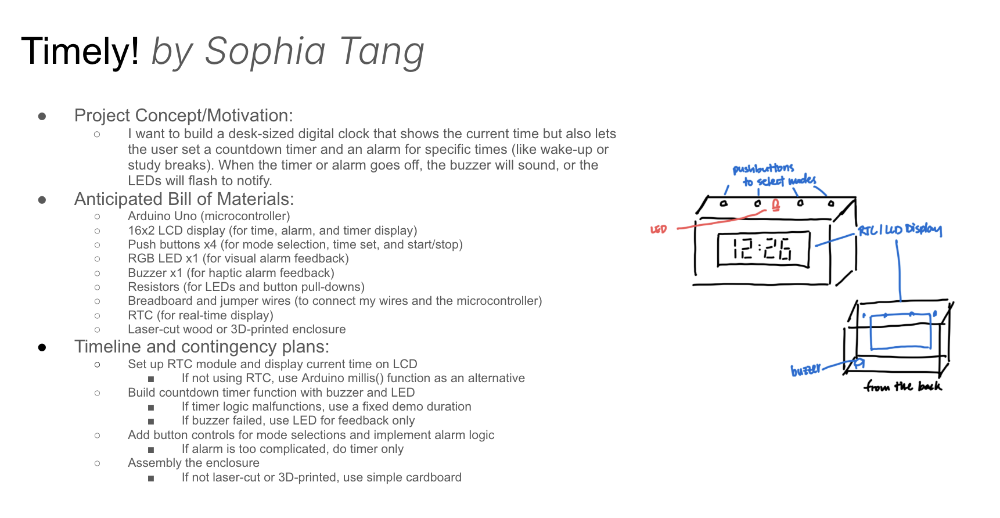
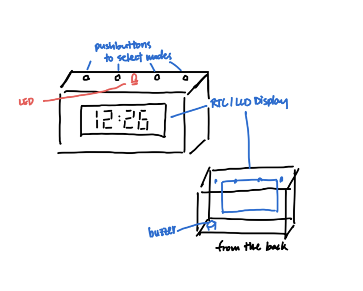

I want to build a desk-sized digital clock that shows the current time but also lets the user set a countdown timer and an alarm for specific times (like wake-up or study breaks). When the timer or alarm goes off, the buzzer will sound, or the LEDs will flash to notify.
 